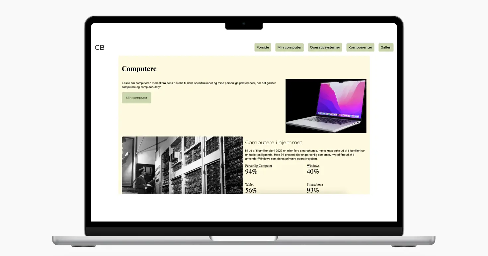
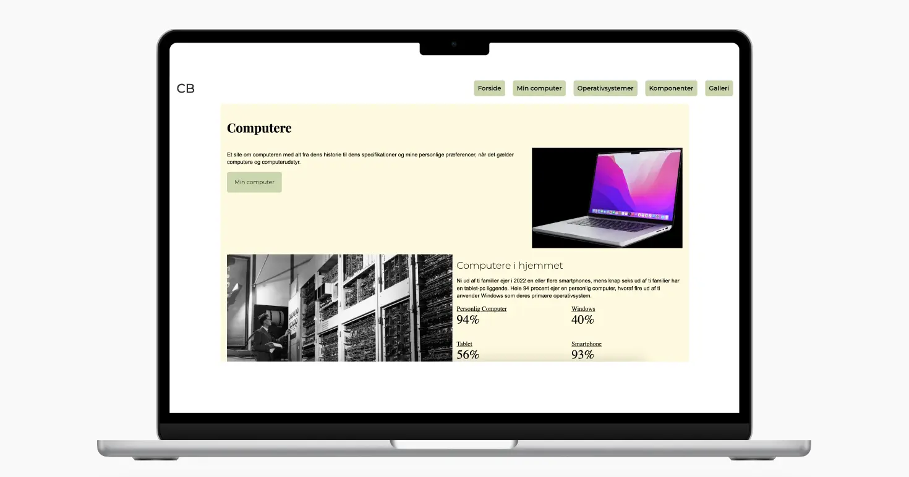

Mobilesite


I dette projekt udviklede jeg et responsivt mobilsite, som senere blev udvidet til et fuldt funktionelt website. Designet inkluderede brugen af to nøje udvalgte fonte, farvekombinationer, og et æstetisk flot gridlayout. Projektet fokuserede på en mobile-first tilgang, hvilket sikrede en optimal brugeroplevelse på tværs af enheder. Dette projekt gav mig både tekniske og designmæssige færdigheder og styrkede min forståelse af, hvordan man bygger moderne, responsivt webdesign.

Kode-proces
Jeg arbejdede med både grid og flexbox for at skabe et fleksibelt og skalerbart layout, og anvendte media queries for at sikre, at designet tilpassede sig forskellige skærmstørrelser. Yderligere blev der implementeret en intuitiv navigationsmenu og metadataoptimering for billeder.
Designanalyse
På designfronten integrerede jeg Gestalt-lovene, layoutprincipper, typografi, og farvevalg, hvilket resulterede i en harmonisk og brugervenlig oplevelse. Jeg udførte også en analyse af eksisterende websites for at forstå, hvordan æstetik og funktionalitet kunne balanceres.


 
